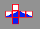

Virtual Design Blocks
Here you see a computerized version of a set of design blocks I made in wood some years ago. In the wooden set each block is a cube, its six faces divided variously between two colors, as shown in this unfolded pattern:  In the virtual version you have an array of 64 of the blocks, with computer code arranged so that clicking on any of the blocks makes it show a new face. By clicking repeatedly you can select any of the possible positions of each block, and hence make any of a wide range of patterns (Here are some examples). Each block can appear in any of 18 ways (six faces, four of which have four rotations, giving 4x4+2=18), so a lot of clicking may be needed. For making your own designs there's a CLEAR button to start you with a field of all white. If you tire of clicking, the KALEIDOSCOPE button will show you automatically evolving patterns. Refreshing your browser window will return you to the original holiday scene. The wooden blocks were easier to work with, but I could never figure out how to get the blocks made in quantity to send to all of you.Happy 2014, Clayton